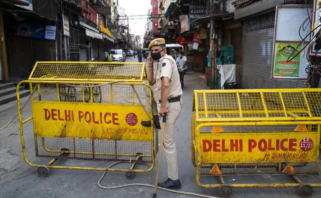

Delhi:
Amid rising number of coronavirus cases, a locality in central Delhi - Chandni Mahal - has reported three coronavirus or COVID-19 deaths in three days and at least 52 positive cases after 102 people were evacuated from 13 mosques earlier this week. The area has been sealed under strict containment measures to control the spread of the virus.
Many of those evacuated, including some foreigners, came from the Nizammudin headquarters of Islamic sect - Tablighi Jamaat - that held a religious gathering last month. The religious gathering has been linked to more than 450 coronavirus cases in the national capital. The city has so far recorded more than 900 cases - the second highest in India - and at least 13 deaths. Across India, the gathering has been linked to more than 1,000 coronavirus cases.
On Monday, 102 people were evacuated from 13 mosques in Chandni Mahal and isolated at a quarantine centre in Gulabhi Bagh, about 8 km away. Of these 52 tested positive for coronavirus; three deaths linked to the highly infectious illness were reported in the area in last three days.
This is one of the biggest clusters that has come across in the city after evacuations at the Nizammudin headquarters of Tablighi Jamaat last month. Over 2,000 delegates, including from Indonesia and Malaysia, attended the congregation in March.
Chandni Mahal has now been cordoned off and the district magistrate has ordered "door to door supply of essential commodities", asking officials to ensure that the residents are not allowed to leave their houses. "The interaction between the people tested positive and residents of Chandni Mahal can't be ruled out," a letter by the District Magistrate Nidhi Srivastava reads.
The entire area will be sanitised under the containment plan to prevent further spread of the illness, it adds. Those who came in contact with the people who have died will be tested for COVID-19 and will remain under home quarantine.The national capital has identified 30 COVID-19 hotspots where strict containment measures are being taken including a total ban on people leaving their homes.One of the containment zones - a locality in East Delhi's Dilshad Garden - has become a "coronavirus-free" area following the "Operation SHIELD" protocol of the government, Health Minister Satyendar Jain told NDTV on Friday. No new cases were reported from the area in the last 10 days.Announced by Chief Minister Arvind Kejriwal on Thursday, SHIELD involves steps like sealing, home quarantine, isolation and tracking, essential supply, local sanitisation and door-to-door checking.
More than 7,400 people have contracted coronavirus in the country, at least 230 people have died due to the outbreak. Worldwide, the number of those infected soared to 16 lakh on Friday, more than 1 lakh have died.